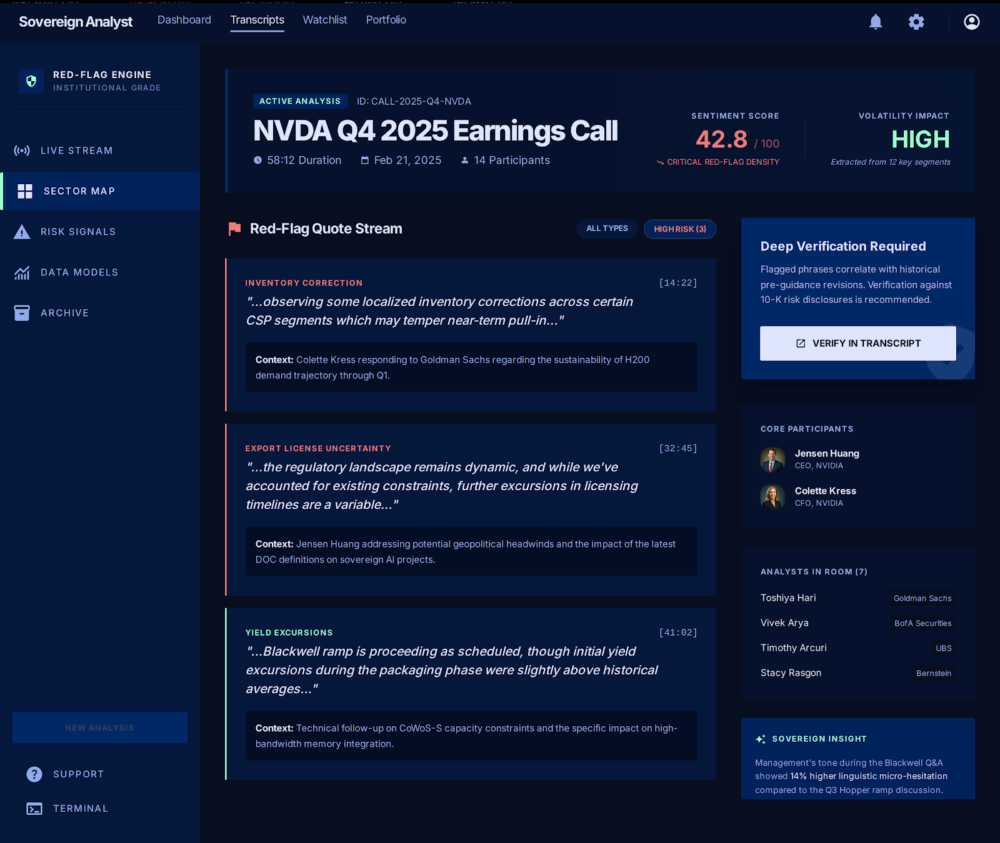

PF SAFE DEMO · 2026-03-19-p001
Earnings Call Red-Flag Highlighter
Surface risky phrases from long earnings transcripts so investors can verify the most important warnings fast.
ingest status
Imported from Stitch exportToday’s Stitch export is wrapped in a PF-safe shell to keep hosting stable while preserving the original visual output.
- Source preserved as local artifact
- Public demo path avoids remote CDN dependency
- Preview uses the shipped Stitch screen
